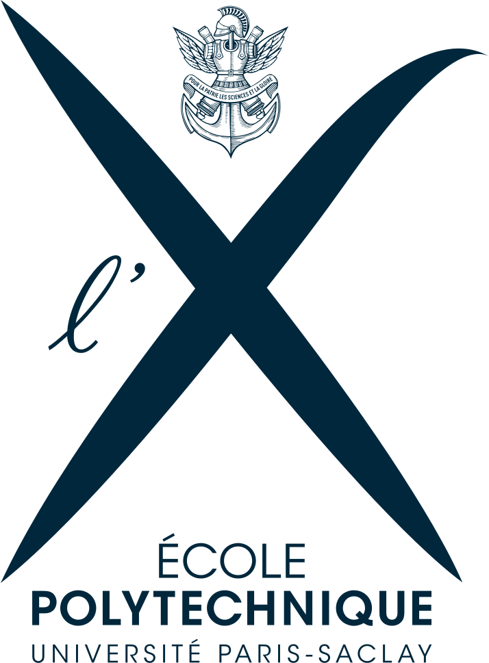
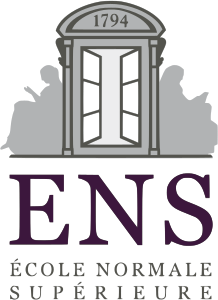
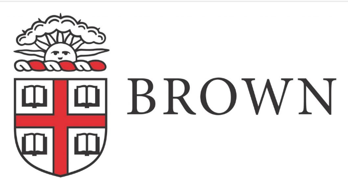

Alba Marina Málaga Sabogal
Audition pour le poste de maître de conférences n°4730
25 mai 2020
Études et vie professionnelle


Mes mentors au fil du temps
En projet de 2e année et stage M1 à l’École polytechnique,
puis en M2 et en thèse à Orsay, puis en postdoc à Marseille
et aux États-Unis, j’ai été encadrée par:
| 2010–2011 |
Projet sc. collectif |
 |
Gilles Courtois |
| 2011 |
Stage rech. M1 |
 |
Vadim Lyubashevsky |
| 2011 |
Stage rech. M2 |
 |
Sylvie Ruette |
| 2011–2014 |
Thèse doctorale |
|
Jean-Christophe Yoccoz |
| 2015 |
Post-doctorat |
|
Alexander Bufetov |
| 2019–2020 |
Post-doctorat |
 |
Richard Schwartz |
Depuis 2015 j’ai une collaboration suivie avec Serge Troubetzkoy sur la dynamique de surfaces de translation de mesure infinie.
Les systèmes dynamiques
- Évolution déterministe à court terme, connue
- Questions concernant l’évolution à long terme
Exemple: les rotations du cercle
Vue de plusieurs itérations.
Thm (Poincaré) Une rotation du cercle est périodique si et seulement si elle est rationnelle. Sinon, elle est ergodique.
Exemple: le flot linéaire sur un tore plat
Exemple: les billards
Extrait du film «Secrets of the Surface» de Csicsery, comme les autres images et animations de Andrea Hale à suivre.
Surfaces de translation et billards «infinis»
Le dépliage d’un billard irrationnel est une surface de genre infini.
Surfaces de translation et billards «infinis»
Surfaces de translation et billards «infinis»
Surfaces de translation et billards «infinis»
Ma thèse sous la direction de J.-C. Yoccoz
J’ai soutenu en 2014 à Orsay une thèse de doctorat intitulée
Étude d’une famille de transformations
préservant la mesure de \(ℤ × 𝕋\).
sous la direction de Jean-Christophe Yoccoz (Collège de France).
Mes résultats sur \(ℤ × 𝕋\) peuvent s’exprimer en termes de dynamique des escaliers infinis.
Thm (2014) Si l’on fixe une direction dans le plan alors la dynamique d’un escalier générique dans cette direction est conservative, minimale et ergodique.
Mes travaux avec Serge Troubetzkoy
Nous poussons beaucoup plus loin les thèmes de ma thèse.
Thm (2015) Génériquement, la dynamique du wind-tree est minimale dans un large ensemble de directions.
Thm (2016) Génériquement, la dynamique du wind-tree dans presque toute direction est ergodique.
Thm (2016) La dynamique d’un billard VH est faiblement mélangeante dans un large ensemble de directions.
Thm (2017) Génériquement, la dynamique du wind-tree est d’indice ergodique infini dans un large ensemble de directions.
Thm (2019) Génériquement, la dynamique des surfaces en escalier est uniquement ergodique dans un large ensemble de directions.
Thm (2019) Génériquement, la dynamique du wind-tree est uniquement ergodique dans un large ensemble de directions.
Cinq articles avec Serge Troubetzkoy (Marseille)
Disponibles sur HAL
Minimality of the Ehrenfest wind-tree model
Journal of modern dynamics 10 (2016), 209–228
Ergodicity of the Ehrenfest wind–tree model
Comptes rendus mathématique 354:10 (2016), 1032–1036
Weakly mixing polygonal billiards
Bull. London Math. Soc. 49 (2017), 141–147
Infinite ergodic index of the Ehrenfest wind-tree model
Commun. Math. Phys. 358 (2018), 995–1006
Unique ergodicity of infinite area translation surfaces
Soumis (2019), 25 p.
Autre collaboration: Plongements polyédraux de tores plats,
avec Pierre Arnoux (Marseille) et Samuel Lelièvre (Orsay).
Quelques exposés récents
Exposés de seminaire
Brown University Geometry/Topology, Providence, 2020
Complex Analysis and Dynamics, New York, 2020
Tufts Math Dynamics and Probability Seminar, Medford, 2019
IM ICERM Special Interest Seminar, Providence, 2019
Applied Math Seminar, Auckland, 2018
Exposés à des colloques
Future recherche au sein du LAMA
Équipe: analyse harmonique
On y mélange analyse, probabilités, fractals, et dynamique symbolique.
Collaborations possibles: Mihalache, Liao, …
Équipe Probabilités: Julien Bremont, …
Équipe Géométrie et Courbure: Bénoît Kloeckner
Découvrir: analyse multifractale, applications et interactions avec systèmes dynamiques.
La forte présence du LAMA dans la communauté m’attire: GDR AMF, écoles à Porquerolles, séminaires SCAM et COOL.
Cours, cours intégrés, TD
Enseignements déjà dispensés:
- Équations différentielles
- Mathématiques numériques avec Python
- Calculus
- Analyse
- Calcul formel avec SageMath
- Structures algébriques
- Gestion de contenu avec Wordpress
- Algèbre linéaire
- Calcul vectoriel
- Calcul intégral
- Programmation orientée objet avec Java
- Introduction à l’informatique avec C++
Facultés d’adaptation
Programme du lycée très différent du mien
- j’ai étudié les programmes (EduScol)
Cours de maths numériques sans ordinateurs
- Python sur smartphone (console Android)
Étudiants d’origines diverses
- je peux enseigner en français, anglais, espagnol, polonais
Souci d’accessibilité
- supports accessibles pour étudiants aveugles
Cours de mathématiques à la FSEG à Créteil
Bases mathématiques de modélisation économique et de gestion,
en licence. Dans les maquettes actuelles:
| Parcours amenagé |
Mathématiques |
|
Statistiques descriptives I |
| L1 |
Mathématiques |
|
Statistiques et outils informatiques I |
| Passerelle |
Outils mathématiques |
|
Statistiques descriptives sur Excel |
| L2 |
Mathématiques |
|
Probabilités, estimation et tests |
| L3 |
Mathématiques des systèmes dynamiques |
|
Processus stochastiques en finance |
|
Optimisation dynamique |
Master: science des données, apprentissage automatique, …
Future adaptation à la FSEG à Créteil
- je connais Python et R
- j’ai enseigné les équations différentielles dans divers parcours
- j’ai fait de l’apprentissage machine
- je suis prête à apprendre SAS, EViews, Stata
- intérêt personnel pour l’économie
lectures: Jean Tirole, Esther Duflo, Joseph Stiglitz, …
- apprendre tout au long de la vie, c’est ma devise
- idées de projets avec des étudiants en économie
Quelques idées de projets avec des étudiants en économie
- Recensements de population universels vs randomisés
- Résultats Pisa et politiques éducatives des pays de l’OCDE
- Répartition des revenus: outils d’analyse,
vision synchronique et diachronique
- Les systèmes d’imposition et leur évolution
- Croissance économique: vision à court terme et long terme
- Le coût de la santé
- Le financement des retraites
Activités de médiation scientifique
\(\sim\) 30 expositions, forums, salons, exposés, …
Pour finir…
| parcours polyvalent |
un vrai souci de l’accessibilité |
fibre «maker» |
| intérêt en médiation scientifique |
enseignement dans le respect |
continuité dans la recherche |
J’ai à cœur de m’intégrer dans la recherche au LAMA et dans l’enseignement à la FSEG.